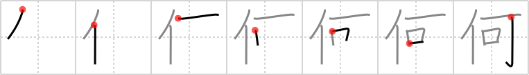

何
← →
what

Reading:
On-Yomi: カ — Kun-Yomi: なに、なん、なに-、なん-
Heisig story:
Person . . . can.
Koohii stories:
1) [Filip] 22-1-2008(157): What can Mr T do? 'You mean: what can't MR T do, you fool'.
2) [msukovich] 6-5-2008(44): "What country you from?" "W-what?" "'What' ain't no country I ever heard of, they speak English in 'What'?" "W-w-what?" "ENGLISH, MOTHERFUCKER, CAN YOU SPEAK IT?" "Yes!" "Now describe what this person Marsellus Wallace looks like!" "W-w-w-what?" "Say 'what' again! SAY 'WHAT' AGAIN! I dare you! I double-dare you, motherfucker! Say 'what' one more god-damn time!".
3) [Megaqwerty] 25-5-2007(31): What can't Mr. T not do?
4) [matticus] 8-12-2005(26): If Mr. T can't do it, what person can?
5) [Tatiana] 22-10-2006(16): Personman. Personman. Doing what only person can.